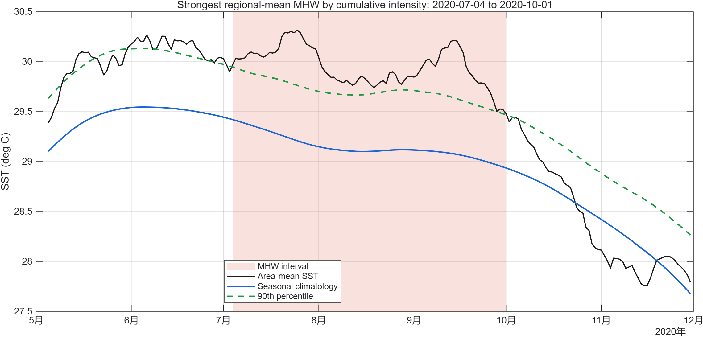
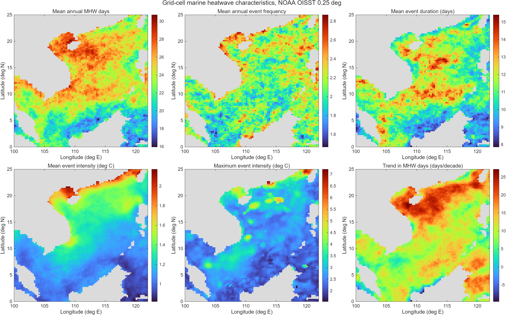
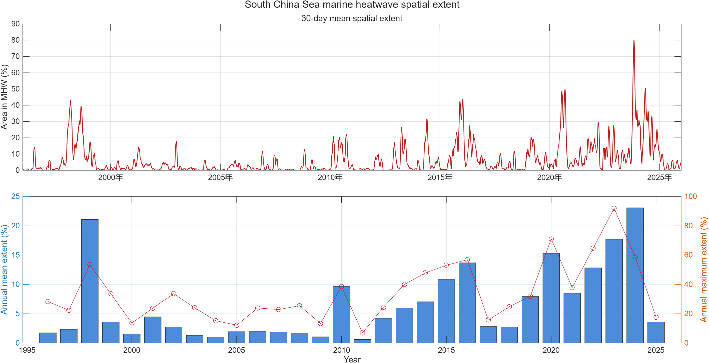

覆盖广 / Broad Coverage
遥感提供大范围海表温度信息，帮助看见海盆尺度的暖异常；单一传感器会受云、观测条件和平台偏差影响。 / Remote sensing covers large areas and reveals basin-scale warm anomalies. A single sensor is affected by clouds, observing conditions and platform biases.
把逐日海温转成每个格点的年度热浪天数，再用 EOF（经验正交分解）寻找共同变化的空间图案。真实数据、原始图像和可播放的重建动画，都在这一页。 / Convert daily SST to annual heatwave days per cell, then use empirical orthogonal functions (EOF) to find shared spatial patterns. This page combines real data, original figures and a playable reconstruction.
本地 NOAA OISST v2.1 分析 · 1996—2025 · 0.25° 网格 / Local NOAA OISST v2.1 analysis · 1996–2025 · 0.25° grid海洋热浪的识别从逐日海表温度开始。这里使用的 OISST 是综合多类观测后插值到规则网格的产品，并非一颗卫星直接拍出的“热浪照片”。 / Marine-heatwave detection begins with daily SST. OISST blends several observation types and interpolates them to a regular grid; it is not a direct heatwave photograph from one satellite.
遥感提供大范围海表温度信息，帮助看见海盆尺度的暖异常；单一传感器会受云、观测条件和平台偏差影响。 / Remote sensing covers large areas and reveals basin-scale warm anomalies. A single sensor is affected by clouds, observing conditions and platform biases.
船舶、浮标及 Argo 的近海表观测参与校正。Argo 还可测海洋内部温盐剖面，但这一页的热浪识别只分析海表。 / Near-surface observations from ships, buoys and Argo help correct biases. Argo also profiles subsurface temperature and salinity, but the heatwave detection here uses only the sea surface.
NOAA 把多平台信息融合与插值，形成逐日 0.25° 海温场。插值补齐格点，并不等于每个格点每天都有原位仪器。 / NOAA blends and interpolates multiple platforms into daily 0.25° SST fields. An interpolated cell does not imply an in-situ instrument was there that day.
本地 1996—2025 年 NOAA OISST v2.1 逐日资料经 Hobday 规则处理，保存为逐格点每年热浪天数；EOF 使用其中 30 年 × 5,529 个有效海洋格点。 / Local daily NOAA OISST v2.1 data for 1996–2025 were processed with Hobday-style rules to yield annual heatwave days per cell. The EOF uses 30 years × 5,529 valid ocean cells.
阈值决定何时属于异常温暖；EOF 分析的是这些事件在每个格点累积成的年度天数。两个步骤解决不同问题。 / A threshold identifies anomalously warm days; EOF analyses the annual event-day totals at each cell. These steps address different questions.

区域平均序列的 59 次事件与逐格点事件目录不是同一统计对象。下方 EOF 使用逐格点年热浪天数，不使用这条区域平均曲线。
The 59 events in the area-mean series are not the same statistical objects as grid-cell events. The EOF uses annual heatwave days per cell, not the area-mean curve.
EOF 与统计学中的主成分分析密切相关：空间图展示“哪里一起变化”，时间系数展示“哪一年更像该图案”。 / EOF is closely related to principal component analysis: spatial maps show where values change together, and principal components show which years resemble a pattern.
每格点的年度天数减去该格点 1996—2025 年平均值。这里分析的是年热浪天数，不再另外扣除季节循环。 / Subtract each cell's 1996–2025 mean from its annual days. Because the input is annual heatwave days, no additional seasonal-cycle removal is applied here.
将每个格点乘以 √cos(纬度)，减少经纬网格面积不同带来的权重差。仅保留有效海洋格点。 / Multiply each cell by √cos(latitude) to account for latitude-dependent cell areas on a regular grid; retain only valid ocean cells.
PC 标准化为标准差 1；地图色值为 PC 变化 1 个标准差对应的热浪天数距平。整对 EOF/PC 同时反号，结果不变。 / PCs are standardized to one standard deviation. A map colour gives the heatwave-day anomaly for a one-SD change in its PC. Reversing both EOF and PC signs leaves the result unchanged.
方差贡献说明统计信息量，不证明某个物理驱动。模态还受区域边界、基准期和预处理影响。 / Explained variance measures statistical information, not proof of a physical driver. Modes also depend on domain, baseline and preprocessing.
下图由本地逐格点年热浪天数重新计算。红色表示与 PC 同号的正距平，蓝色表示负距平；颜色表示相对各格点 30 年均值的变化，单位是天。 / These maps were recalculated from local annual heatwave days. Red shows positive anomalies for a positive PC and blue negative ones; colours are days relative to each cell's 30-year mean.
第一模态在有效海域几乎全为同号，描述海盆大范围年热浪天数同步偏多或偏少的主要统计变化。它不等于每年所有海区都发生同一次事件。 / EOF 1 has nearly the same sign across the valid basin and summarizes years with widespread increases or decreases in heatwave days. It does not mean every region shares one event each year.
第二模态呈现正负区域的对照变化。正负号本身没有冷暖好坏含义；应把地图与同一模态的 PC 符号一起读。 / EOF 2 contrasts positive and negative regions. The sign alone is not a value judgment; read the map together with the corresponding PC sign.
原图英文坐标与色标对照：Longitude = 经度，Latitude = 纬度，Days / 1 SD of PC = 主成分变化一个标准差对应的热浪天数距平。 / Figure key: longitude, latitude and heatwave-day anomaly per one standard deviation of the principal component.
此处使用协方差型 EOF，未把各格点除以自己的标准差，也未去除长期线性趋势；模态 1 因而可能包含长期变化与极端年份的共同影响。 / This covariance EOF does not standardize each cell by its own standard deviation or remove the linear trend. EOF 1 may therefore combine long-term change with unusual years.
把前两个 EOF 地图分别乘以该年的 PC，再相加，得到“由前两模态解释的年热浪天数距平”。这是统计重建，不是观测原图，也不能用来定位某一天的热浪边界。 / Multiply each of the first two EOF maps by that year's PC and add them to reconstruct annual heatwave-day anomalies. This is statistical reconstruction, not an observation image or a daily event-boundary map.
EOF 1 + EOF 2 合计解释 72.59% 的面积加权方差
EOF 1 + EOF 2 jointly explain 72.59% of area-weighted variance
正在加载本地研究结果… / Loading local research results…
EOF 只概括年际共变。要读懂热浪的频次、持续、强度和覆盖范围，还必须看原始逐格点与逐日图。以下图像来自你本地研究输出。 / EOF summarizes year-to-year covariation. Frequency, duration, intensity and coverage also require the original daily and grid-cell figures below, drawn from local research output.


EOF 输入为本地 analysis_results.mat 中的 annualDays。重算的 30 年平均地图与原结果完全一致；逐年面积平均与原统计表最大差异小于 10⁻¹⁰ 天；前三空间向量的正交误差约 10⁻¹⁵。网页只导出绘图所需的匿名网格值，没有上传原始逐日数据。
The EOF input is annualDays from the local analysis_results.mat. The recomputed 30-year mean map matches the reference exactly; the largest difference in annual area means is below 10⁻¹⁰ days, and the first three spatial vectors have orthogonality error near 10⁻¹⁵. The site publishes only anonymous gridded values needed for the figures, not raw daily data.
本地事件识别以 1996—2025 年同一时期作为阈值基准和分析期。EOF 描述这 30 年内部的相对变化；图中的线性趋势没有在此页做显著性或因果检验。若用于论文中的气候变化结论，应另做固定早期基准、去趋势和独立资料敏感性分析。EOF 的统计模态不能直接命名为季风或 ENSO 驱动。 / The same 1996–2025 period sets the event threshold and serves as the analysis period. EOF describes relative variation within those 30 years; this page has not tested the plotted linear trend for significance or causation. Climate-change claims require a fixed earlier baseline, detrending and independent-data sensitivity tests. An EOF mode cannot be labelled a monsoon or ENSO driver on its own.
本页公开的是由本地数据生成的汇总地图与时间系数，以及研究原图；观测产品的技术细节以 NOAA 为准。 / This page publishes summary maps, time coefficients and research figures derived from local data. Consult NOAA for technical details of the observational product.